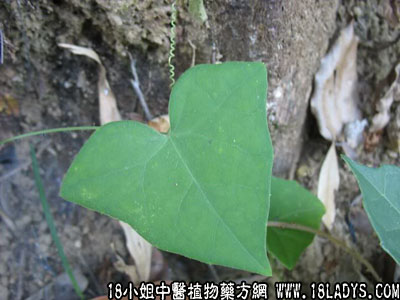

别名：老鼠拉金瓜。
植物名：马交儿。
生长环境：本品为柔弱草质藤本，生于荒地灌木丛中，常缠绕灌木上。
分布：我国南部，广州附近可见。
入药部分：全草。
采集期：夏、秋。
自采地点：郊外荒地。
性味：性凉、味甘淡。
功能：清肝肺热、祛湿、利小便。
主治、用量和用法：1、湿火骨痛、脚痛：干用1至2两清水煎服；2、眼热：干用1至2两，清水煎服；3、喉痛，配伍用。
验方1：（治眼热方）老鼠拉冬瓜、犁头草、路边菊花、桑叶各5钱、清水三碗，煎成一碗服。
（方解）眼热每因肝肺风热上乘，治以疏丰清热为主，本方老鼠拉冬瓜、犁头草、清肝肺热；路边菊、桑叶、疏风清热明目、风热已治，眼热自除。
（方歌）肝肺风热眼痛成，老鼠冬瓜桑叶呈，路边菊合犁头草，热散风疏眼复明。
验方2：（治喉痛方）老鼠拉冬瓜1两、篱栏1两、清水二碗，煎成一碗服。
（方解）老鼠拉冬瓜、篱栏藤清肝肺热，善治喉痛、凡肺火上炎，喉肿咽痛、嘶哑失音，用之甚效。
（方歌）热肺声嘶火上炎，老鼠拉瓜篱栏缠，凉肺清肝火下降，喉疼咽痛自安然。
参考资料：《广东中医验方交流汇编》云浮六合诊所治眼红起膜方：老鼠拉冬瓜2两、煮猪瘦肉食，连汤饮之有效。
本文解释权归中药大全，本文地址：https://www.daquan.com/post/1606.html